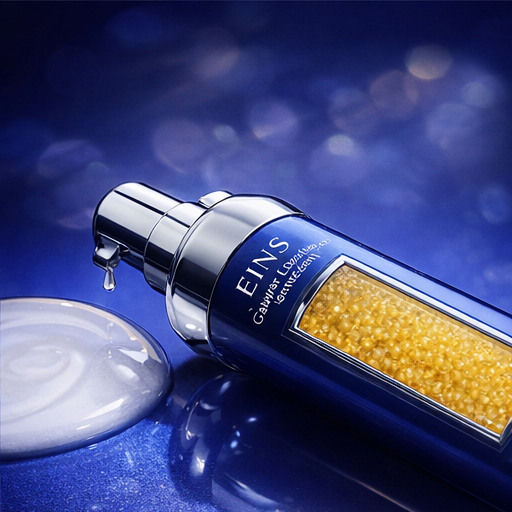

Caviar Essence Lotion
A refined essence lotion designed to support firmness, radiance, and a smoother, plumper-looking complexion with a silky, nourishing feel.

Caviar Essence Lotion
Caviar Essence Lotion is developed around the idea of firmness, radiance, and a more refined skin texture. With caviar extract, peptides, and hydrating support ingredients, it helps skin appear smoother, softer, and more luminous while maintaining a silky essence-lotion feel.
- Supports a smoother, plumper-looking complexion with a refined daily treatment feel.
- Silky essence-lotion texture that sits between hydration and nourishing care.
- Suitable for routines focused on radiance, firmness, and a more polished skin look.
Core Highlights
A polished product story centered on firmness support, radiance, and a silky essence-lotion texture.
Refined Revitalizing Care
Designed for skin that wants a more luminous, smoother, and better-rested appearance in daily care.
Comfortable Nourishing Texture
Delivers a soft, elegant finish without feeling heavy, making it easy to layer in a skincare routine.
Firmness & Radiance Focus
Balances the feel of hydration and care to support bounce, glow, and a more polished complexion.
Product Overview
This essence lotion is crafted for skin that seeks a more refined, luminous, and supple appearance. The formula centers on caviar extract, peptides, and hydrating support ingredients to help improve the look of smoothness, softness, and visible vitality. Its silky texture glides on comfortably and fits naturally into both morning and evening routines.
How to Use
- Apply after cleansing and toning, before cream or as the main essence step in your routine.
- Dispense an appropriate amount and smooth across the face and neck, then press gently for comfort.
- Use morning and evening to support a softer, brighter, and more supple-looking complexion.
Ingredient & Texture Highlights
These sections present the formula direction, the daily-use setting, and the silky sensory character of the product.
Revitalizing Formula Direction
Built around caviar extract, firming-support peptides, and hydration-focused ingredients for a smoother and more luminous skin look.
Daily Essence Ritual
Works well as a morning or evening step when skin needs a more refined, radiant, and silky care experience.
Silky Serum-Lotion Expression
The texture begins with the slip of an essence and settles with the soft comfort of a nourishing serum-lotion.
Product Information
A caviar-inspired essence lotion created around firmness, radiance, and a smooth, silky care experience.
Interested in Eins Products?
Contact us for brand introductions, channel cooperation, product inquiries, or future retail opportunities.